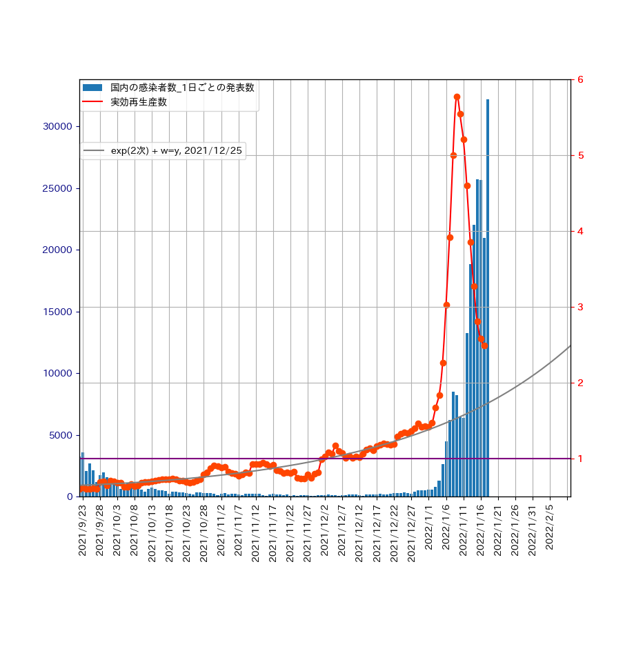

Pythonによるデータの可視化3
Data Visualization with Python 3
COvid-19と回帰分析
実効再生産数の回帰直線をエイヤッと引いてみる。

データの数が増えると直線近似は良くないように思えます。そこで、
指数関数でのフィッティングを、numpyのployfit関数を用いて、いろいろと試みました。
ここで、2021/9/23を起点とした日数を\(x\)として、実効再生産数を\(y\)とします。
\(x\)の2次式の指数関数とし、
ウエイト(\(w\))を\(y\)、または、\(y^2\)とした場合のfittingの結果は、以下のようになりました。

作成したプログラムについては、 ここ をご覧ください。
2021年12月20日ころからは、オミクロン株の確認が増えています。その様子は、実効再生産数と1日ごとの感染者数 から見て取れます。ところが、2022年1月9日を境に実効再生産数は減少に転じています。 これは、どのように解釈すれば良いのでしょうか。

- \(w=y \ \) の場合
- 2021/12/25までのデータを使用した場合 \(y = \exp(-0.434656175 + 0.00262067149*x + 4.83403391e-05*x^2) \)
- 2022/1/1までのデータを使用した場合 \(y = \exp( -0.42786221 + 0.00214405078*x + 5.39384081e-05*x^2) \)
- 2022/1/2までのデータを使用した場合 \(y = \exp( -0.42562941 + 0.00199172574*x+ 5.567162707e-05 *x^2) \)
- \(w=y^2\)の場合
- 2021/12/25までのデータを使用した場合 \(y = \exp(-0.410929621 + 0.00205032382*x + 5.35490199e-05*x^2)\)
- 2022/1/1までのデータを使用した場合 \(y = \exp(-0.406312266 + 0.00179863723*x + 5.60764465e-05*x^2)\)
- 2022/1/2までのデータを使用した場合 \(y = \exp(-0.402308679 + 0.00157437280*x + 5.83468693e-05*x^2)\)
作成したプログラムについては、 ここ をご覧ください。
2021年12月20日ころからは、オミクロン株の確認が増えています。その様子は、実効再生産数と1日ごとの感染者数 から見て取れます。ところが、2022年1月9日を境に実効再生産数は減少に転じています。 これは、どのように解釈すれば良いのでしょうか。